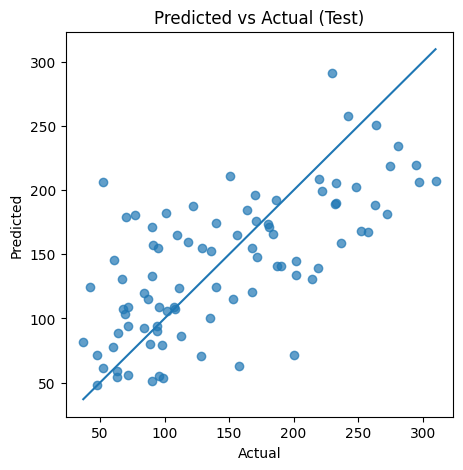
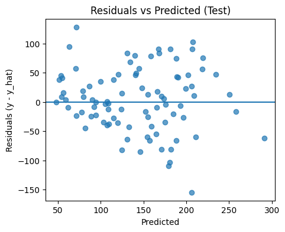

# Load Diabetes dataset and fit a Linear Regression model
from sklearn.datasets import load_diabetes
from sklearn.model_selection import train_test_split
from sklearn.linear_model import LinearRegression
from sklearn.metrics import mean_squared_error, mean_absolute_error, r2_score
import pandas as pd
import numpy as npLinear Regression
In this lesson, we build a first predictive model on the Diabetes dataset using Ordinary Least Squares (OLS) linear regression. We will derive the objective, fit a model, inspect coefficients, and produce key diagnostic plots.
Learning objectives - Write the linear model and OLS objective using proper notation. - Fit and evaluate a linear regression model on the Diabetes dataset. - Interpret coefficients and assess assumptions via residual diagnostics.
Linear Model and OLS Objective
A \(p\)-feature linear model predicts a continuous outcome as \[ \hat{y} = \beta_0 + \sum_{j=1}^p \beta_j x_j \,. \]
In matrix form with \(X \in \mathbb{R}^{n \times p}\), parameter vector \(\boldsymbol{\beta} \in \mathbb{R}^{p}\), and target \(\mathbf{y} \in \mathbb{R}^{n}\), \[ \hat{\mathbf{y}} = X\boldsymbol{\beta} \quad \text{(assuming $X$ already includes a column of ones for the intercept).} \]
Ordinary Least Squares (OLS) estimates \(\boldsymbol{\beta}\) by minimizing the Mean Squared Error (MSE): \[ \mathcal{L}(\boldsymbol{\beta}) = \frac{1}{n}\sum_{i=1}^n (y_i - \hat{y}_i)^2 = \frac{1}{n}\lVert \mathbf{y} - X\boldsymbol{\beta}\rVert_2^2 \,. \]
Under standard conditions (full-rank \(X\)), the minimizer has a closed form: \[ \hat{\boldsymbol{\beta}} = (X^{\top}X)^{-1}X^{\top}\mathbf{y} \,. \]
In practice, libraries use numerically stable solvers (e.g., QR decomposition) rather than forming \((X^{\top}X)^{-1}\) explicitly.
Key Assumptions (Diagnostics Later)
- Linearity: The expected value of \(y\) is a linear combination of features.
- Independence: Errors are independent across observations.
- Homoscedasticity: Constant variance of errors across fitted values.
- Normality of residuals: Residuals are approximately Gaussian (helps inference, less critical for prediction quality).
We will visualize residuals vs. predictions and the distribution of residuals to get a feel for these assumptions.
# Load dataset (already standardized features)
data = load_diabetes(as_frame=True)
df = data.frame.copy()
df.rename(columns={'target': 'disease_progression'}, inplace=True)
df| age | sex | bmi | bp | s1 | s2 | s3 | s4 | s5 | s6 | disease_progression | |
|---|---|---|---|---|---|---|---|---|---|---|---|
| 0 | 0.038076 | 0.050680 | 0.061696 | 0.021872 | -0.044223 | -0.034821 | -0.043401 | -0.002592 | 0.019907 | -0.017646 | 151.0 |
| 1 | -0.001882 | -0.044642 | -0.051474 | -0.026328 | -0.008449 | -0.019163 | 0.074412 | -0.039493 | -0.068332 | -0.092204 | 75.0 |
| 2 | 0.085299 | 0.050680 | 0.044451 | -0.005670 | -0.045599 | -0.034194 | -0.032356 | -0.002592 | 0.002861 | -0.025930 | 141.0 |
| 3 | -0.089063 | -0.044642 | -0.011595 | -0.036656 | 0.012191 | 0.024991 | -0.036038 | 0.034309 | 0.022688 | -0.009362 | 206.0 |
| 4 | 0.005383 | -0.044642 | -0.036385 | 0.021872 | 0.003935 | 0.015596 | 0.008142 | -0.002592 | -0.031988 | -0.046641 | 135.0 |
| ... | ... | ... | ... | ... | ... | ... | ... | ... | ... | ... | ... |
| 437 | 0.041708 | 0.050680 | 0.019662 | 0.059744 | -0.005697 | -0.002566 | -0.028674 | -0.002592 | 0.031193 | 0.007207 | 178.0 |
| 438 | -0.005515 | 0.050680 | -0.015906 | -0.067642 | 0.049341 | 0.079165 | -0.028674 | 0.034309 | -0.018114 | 0.044485 | 104.0 |
| 439 | 0.041708 | 0.050680 | -0.015906 | 0.017293 | -0.037344 | -0.013840 | -0.024993 | -0.011080 | -0.046883 | 0.015491 | 132.0 |
| 440 | -0.045472 | -0.044642 | 0.039062 | 0.001215 | 0.016318 | 0.015283 | -0.028674 | 0.026560 | 0.044529 | -0.025930 | 220.0 |
| 441 | -0.045472 | -0.044642 | -0.073030 | -0.081413 | 0.083740 | 0.027809 | 0.173816 | -0.039493 | -0.004222 | 0.003064 | 57.0 |
442 rows × 11 columns
X = df.drop(columns=['disease_progression'])
y = df['disease_progression']
X_train, X_test, y_train, y_test = train_test_split(
X, y, test_size=0.2, random_state=42
)
linreg = LinearRegression()
linreg.fit(X_train, y_train)LinearRegression()In a Jupyter environment, please rerun this cell to show the HTML representation or trust the notebook.
On GitHub, the HTML representation is unable to render, please try loading this page with nbviewer.org.
Parameters
| fit_intercept | True | |
| copy_X | True | |
| tol | 1e-06 | |
| n_jobs | None | |
| positive | False |
# Predictions
y_pred_train = linreg.predict(X_train)
y_pred_test = linreg.predict(X_test)
print(y_pred_test[:10])
print(y_test[:10].values)[139.5475584 179.51720835 134.03875572 291.41702925 123.78965872
92.1723465 258.23238899 181.33732057 90.22411311 108.63375858]
[219. 70. 202. 230. 111. 84. 242. 272. 94. 96.]# Metrics
mse_train = mean_squared_error(y_train, y_pred_train)
mse_test = mean_squared_error(y_test, y_pred_test)
rmse_train = np.sqrt(mse_train)
rmse_test = np.sqrt(mse_test)
mae_train = mean_absolute_error(y_train, y_pred_train)
mae_test = mean_absolute_error(y_test, y_pred_test)
r2_train = r2_score(y_train, y_pred_train)
r2_test = r2_score(y_test, y_pred_test)
metrics_df = pd.DataFrame({
'set': ['train', 'test'],
'MSE': [mse_train, mse_test],
'RMSE': [rmse_train, rmse_test],
'MAE': [mae_train, mae_test],
'R2': [r2_train, r2_test],
})
metrics_df| set | MSE | RMSE | MAE | R2 | |
|---|---|---|---|---|---|
| 0 | train | 2868.549703 | 53.558843 | 43.483504 | 0.527919 |
| 1 | test | 2900.193628 | 53.853446 | 42.794095 | 0.452603 |
Quick Reading of Metrics
- RMSE and MAE are in the same units as the target (
disease_progression), making them more interpretable than MSE. - \(R^2\) shows the proportion of variance explained by the model. Values closer to \(1\) are better. Negative \(R^2\) on the test set indicates severe mismatch (worse than predicting the mean).
Compare train vs test: a large gap often signals overfitting; similar but poor scores can signal underfitting or model misspecification.
# Inspect learned coefficients
import pandas as pd
coef_df = pd.DataFrame({
'feature': X.columns,
'coefficient': linreg.coef_
}).sort_values(by='coefficient', key=abs, ascending=False).reset_index(drop=True)
intercept = linreg.intercept_
display(coef_df)
print("Intercept (beta_0):", intercept)| feature | coefficient | |
|---|---|---|
| 0 | s1 | -931.488846 |
| 1 | s5 | 736.198859 |
| 2 | bmi | 542.428759 |
| 3 | s2 | 518.062277 |
| 4 | bp | 347.703844 |
| 5 | s4 | 275.317902 |
| 6 | sex | -241.964362 |
| 7 | s3 | 163.419983 |
| 8 | s6 | 48.670657 |
| 9 | age | 37.904021 |
Intercept (beta_0): 151.34560453985995Interpreting coefficients (with standardized features) - A positive coefficient for feature \(x_j\) means that increasing \(x_j\) (holding others fixed) tends to increase predicted \(y\). - A negative coefficient means the opposite. - Because the Diabetes features are standardized, coefficients are roughly comparable in magnitude.
Interpretation is conditional on other features in the model; correlated features can complicate attribution.
Optional: Statsmodels OLS for Statistical Summary
While scikit-learn focuses on prediction, the statsmodels library provides detailed statistical inference tools.
Using statsmodels.OLS, we can obtain: - Standard errors and confidence intervals for coefficients - p-values for hypothesis tests - Model fit statistics like AIC and BIC
This is useful when interpreting the model in a traditional statistics context.
import statsmodels.api as sm
# Add constant for intercept
X_train_const = sm.add_constant(X_train)
ols_model = sm.OLS(y_train, X_train_const).fit()
# Show a rich statistical summary
print(ols_model.summary()) OLS Regression Results
===============================================================================
Dep. Variable: disease_progression R-squared: 0.528
Model: OLS Adj. R-squared: 0.514
Method: Least Squares F-statistic: 38.25
Date: Tue, 09 Sep 2025 Prob (F-statistic): 5.41e-50
Time: 13:22:36 Log-Likelihood: -1906.1
No. Observations: 353 AIC: 3834.
Df Residuals: 342 BIC: 3877.
Df Model: 10
Covariance Type: nonrobust
==============================================================================
coef std err t P>|t| [0.025 0.975]
------------------------------------------------------------------------------
const 151.3456 2.902 52.155 0.000 145.638 157.053
age 37.9040 69.056 0.549 0.583 -97.923 173.731
sex -241.9644 68.570 -3.529 0.000 -376.836 -107.093
bmi 542.4288 76.956 7.049 0.000 391.062 693.795
bp 347.7038 71.357 4.873 0.000 207.350 488.057
s1 -931.4888 451.138 -2.065 0.040 -1818.844 -44.134
s2 518.0623 364.114 1.423 0.156 -198.122 1234.247
s3 163.4200 233.014 0.701 0.484 -294.901 621.741
s4 275.3179 185.400 1.485 0.138 -89.349 639.985
s5 736.1989 192.437 3.826 0.000 357.689 1114.709
s6 48.6707 73.435 0.663 0.508 -95.771 193.113
==============================================================================
Omnibus: 1.457 Durbin-Watson: 1.794
Prob(Omnibus): 0.483 Jarque-Bera (JB): 1.412
Skew: 0.064 Prob(JB): 0.494
Kurtosis: 2.718 Cond. No. 219.
==============================================================================
Notes:
[1] Standard Errors assume that the covariance matrix of the errors is correctly specified.# Predicted vs Actual (Test set)
import matplotlib.pyplot as plt
import numpy as np
plt.figure(figsize=(5,5))
plt.scatter(y_test, y_pred_test, alpha=0.7)
# 45-degree reference line
min_val = min(y_test.min(), y_pred_test.min())
max_val = max(y_test.max(), y_pred_test.max())
plt.plot([min_val, max_val], [min_val, max_val])
plt.xlabel("Actual")
plt.ylabel("Predicted")
plt.title("Predicted vs Actual (Test)")
plt.show()
Reading the plot - Points along the diagonal indicate accurate predictions. - Systematic curvature away from the line suggests model misspecification (e.g., non-linearities). - Wide vertical spread indicates high variance (errors) for certain ranges of the target.
# Residual diagnostics (Test set)
import matplotlib.pyplot as plt
import numpy as np
residuals = y_test - y_pred_test
# Residuals vs Predicted
plt.figure(figsize=(5,4))
plt.scatter(y_pred_test, residuals, alpha=0.7)
plt.axhline(0)
plt.xlabel("Predicted")
plt.ylabel("Residuals (y - y_hat)")
plt.title("Residuals vs Predicted (Test)")
plt.show()
# Histogram of residuals
plt.figure(figsize=(5,4))
plt.hist(residuals, bins=20)
plt.xlabel("Residual")
plt.ylabel("Frequency")
plt.title("Residuals Distribution (Test)")
plt.show()

Diagnostics - Homoscedasticity: Look for a constant vertical spread across predictions. A funnel shape suggests heteroscedasticity. - Non-linearity: Curved patterns indicate linearity violations. - Normality: A roughly symmetric, bell-shaped residual histogram is supportive (though not strictly required for good predictions).
# Optional: Cross-validated R^2 to gauge robustness
from sklearn.model_selection import cross_val_score
import numpy as np
cv_scores = cross_val_score(LinearRegression(), X, y, scoring='r2', cv=5)
cv_scores, np.mean(cv_scores), np.std(cv_scores)(array([0.42955615, 0.52259939, 0.48268054, 0.42649776, 0.55024834]),
np.float64(0.4823164359086422),
np.float64(0.0492685775119038))Cross-validation provides a more stable estimate of performance by averaging across folds. A high standard deviation indicates sensitivity to how the data is split.
Summary
- We fit a linear regression model and examined coefficients and diagnostics.
- We computed RMSE, MAE, and \(R^2\) on train/test splits.
- Residual plots help check assumptions and guide next steps.
Next: A dedicated Model Evaluation notebook will deepen our understanding with additional metrics, visual checks, and learning curves before we progress to regularization (Ridge, Lasso) to combat potential overfitting and multicollinearity.
Exercises
- Feature selection trial: Retrain the model using only the top-5 features by absolute coefficient magnitude. Compare test RMSE and \(R^2\).
- Polynomial feature experiment: Create a squared term for
bmiand refit the model. Did residual patterns improve?